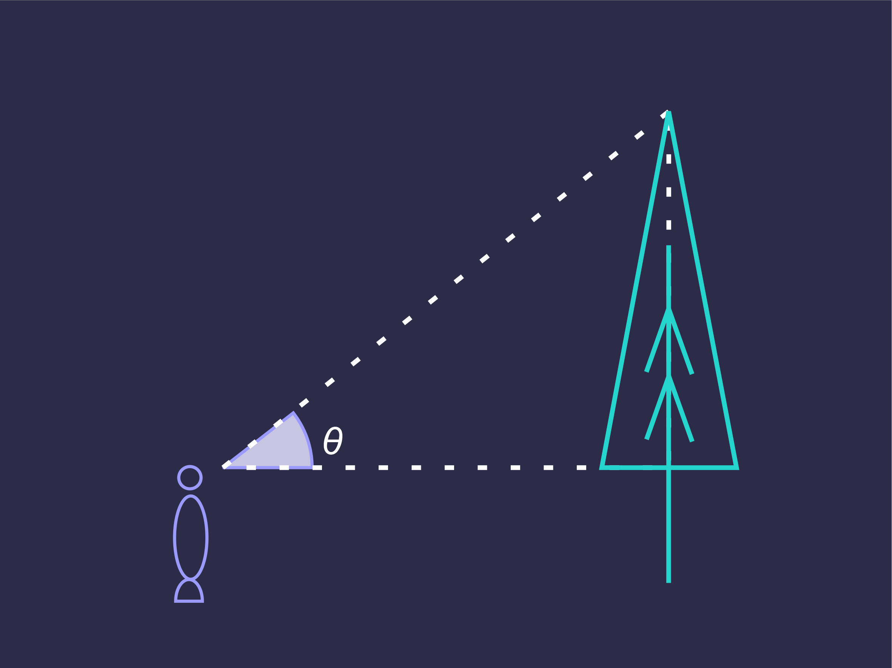
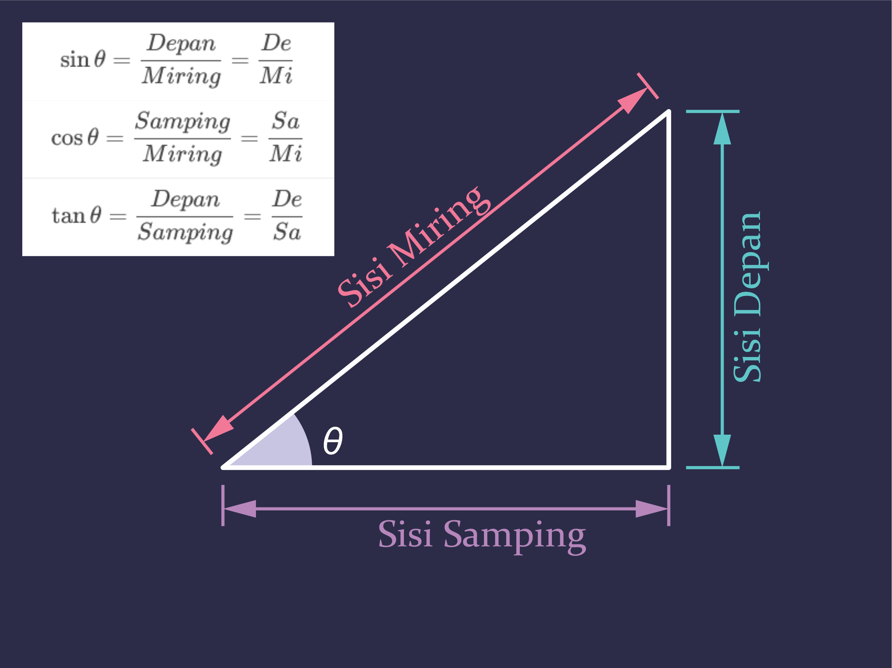
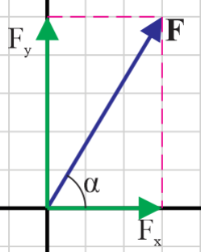

# Vektor - Pengertian dan Notasi Vektor - Komponen Vektor - Operasi Vektor (Penjumlahan dan Perkalian) --- ### Vektor <div class="container"> <div class="col" > </div> <div class="col" style="font-size: 30px;"> Kapten Hook tiba di sebuah pulau harta karun dengan kapalnya di titik yang ditandai dengan X. Dengan berbekal sebuah peta dan sedikit petunjuk, ia berniat mencari harta karun di pulau itu. Petunjuk itu berbunyi demikian: 4 km ke utara, 3 km ke barat, 1 km ke selatan, 5 km ke barat, 3 km ke utara. Jika satu kotak dalam peta sama dengan 1 km, di manakah harta karun tersebut? </div> </div> --- ### Besaran Vektor dan Skalar - Dalam pembahasan mengenai gerak, jika gerak itu hanya dalam satu dimensi, kita dapat menyatakan kecepatan atau percepatan, meliputi besarnya dan juga arahnya (ke kiri atau ke kanan) dengan mudah. Tetapi, ketika gerak terjadi dalam dua atau tiga dimensi, kita perlu menyatakan arah, dan itu tidak bisa hanya dengan tanda plus dan minus. --- - Besaran yang memiliki besar dan arah dinamakan besaran *vektor*. Besaran yang hanya memiliki besar atau nilai disebut besaran *skalar*. Dari tujuh besaran pokok, hanya besaran panjang yang dapat merupakan vektor sehingga turunannya kemungkinan besar adalah besaran vektor. --- ### Notasi Vektor - Secara grafis, vektor dilambangkan dengan anak panah. Ke mana anak panah itu menunjuk, itulah arahnya. Panjangnya menggambarkan besarnya. Dalam penulisan, besaran vektor umumnya ditulis dengan anak panah di atas atau dengan huruf tebal. Misalnya, vektor A dituliskan sebagai *$\boldsymbol {A}$* atau *$\vec {A}$*. Besarnya dituliskan sebagai *$|A|$* atau *$\|A \|$* atau *$A$* saja. --- --- - Dalam gambar di atas, vektor *$\vec {u}$* dapat dinyatakan besarnya sebagai 4 satuan dan arahnya 90° dari sumbu X, atau 53° dari vektor *$\vec {v}$*. Vektor *$\vec {v}$* dinyatakan sebagai besarnya 5 satuan dan arahnya 37° dari sumbu X positif. - Vektor *$\vec {u}=4 \boldsymbol {\hat {r}}+\frac{\pi}{2} \boldsymbol {\hat {\theta}}$* atau secara umum ###### $\vec {A}=A_r \boldsymbol {\hat {r}}+A_{\theta} \boldsymbol {\hat {\theta}}$ - A<sub>r</sub> adalah panjang vektor tersebut. A<sub>θ</sub> adalah sudut antara sumbu X positif dan vektor tersebut (0 ≤ θ ≤ 2Ï€). --- - Vektor tersebut dapat dinyatakan juga dalam vektor satuan. Vektor satuan adalah vektor dengan panjang satu satuan. Terdapat tiga vektor satuan yang sudah ditentukan arahnya, yakni *$\boldsymbol {\hat {\imath }}$*,*$\boldsymbol {\hat {\jmath }}$* dan *$\boldsymbol {\hat {k}}$* yang masing-masing memiliki arah sejajar sumbu 𝑥, 𝑦, dan 𝑧. Jika dinyatakan dalam vektor satuan, maka: - Vektor *$\vec {u}=0 \boldsymbol {\hat {\imath }}+4 \boldsymbol {\hat {\jmath }}+0 \boldsymbol {\hat {k}}$* - Artinya vektor $\vec {u}$ hanya memiliki komponen yang ke arah sumbu 𝑦, dan besarnya adalah 4 satuan. --- - Vektor *$\vec {v}=4 \boldsymbol {\hat {\imath }}+3 \boldsymbol {\hat {\jmath }}+0 \boldsymbol {\hat {k}}$* - Artinya vektor $\vec {v}$ hanya memiliki komponen yang ke arah sumbu X, besarnya adalah 4 satuan dan ke arah sumbu Y, besarnya adalah 3 satuan. - Secara umum, ###### $$\vec {A}=A_x \boldsymbol {\hat {\imath }}+A_y \boldsymbol {\hat {\jmath }}+A_z \boldsymbol {\hat {k}}$$ - adalah komponen vektor yang sejajar sumbu X, *A<sub>y</sub>* adalah komponen vektor yang sejajar sumbu Y, dan *A<sub>z</sub>* adalah komponen vektor yang sejajar sumbu Z. --- - Cara lain untuk menuliskan vektor adalah dengan matriks. Dengan cara, ini vektor di atas dituliskan sebagai berikut: - $\vec {u}=\begin{pmatrix} 0\cr 4\cr 0\cr \end{pmatrix}$ dan $\vec {v}=\begin{pmatrix} 4\cr 3\cr 0\cr \end{pmatrix}$ atau secara umum $\vec {A}=\begin{pmatrix} A_x\cr A_y\cr A_z\cr \end{pmatrix}$ --- ### Trigonometri  --- ### Trigonometri  --- #### Nilai sin, cos, dan tan sudut istimewa | | $$0\degree$$ | **$$30\degree$$** | $$45\degree$$ | **$$60\degree$$** | $$90\degree$$ | | --- | --- | --- | --- | --- | --- | | $$sin$$ | $$0$$ | **$$\tfrac 1 2$$** | $$\tfrac 1 2\sqrt2$$ | **$$\tfrac 1 2\sqrt3$$** | $$1$$ | | $$cos$$ | $$1$$ | **$$\tfrac 1 2\sqrt3$$** | $$\tfrac 1 2\sqrt2$$ | **$$\tfrac 1 2$$** | $$0$$ | | $$tan$$ | $$0$$ | **$$\tfrac 1 3\sqrt3$$** | $$1$$ | **$$\sqrt3$$** | $$\infty$$ | --- ### Komponen Vektor  --- - Andaikan kita punya vektor *$\vec {F}$* yang berada pada koordinat cartesian dan membentuk sudut *α* terhadap sumbu X positif. Vektor itu dapat kita uraikan ke dalam komponen-komponennya, yakni komponen yang sejajar sumbu X, kita sebut *F<sub>x</sub>*, dan komponen yang sejajar sumbu Y, kita sebut *F<sub>y</sub>*. - Sesuai definisi **sin** dan **cos** dalam trigonometri, maka: --- - $\sin \alpha=\frac{\text{sisi\space depan}}{\text{sisi\space miring}}=\frac{F_y}{F}$ sehingga ###### $$F_y=F\sin\alpha$$ - $\cos \alpha=\frac{\text{sisi\space depan}}{\text{sisi\space miring}}=\frac{F_x}{F}$ sehingga ###### $$F_x=F\cos\alpha$$ ###### $$\tag{2 dimensi} |F|=\sqrt{F^2_x+F^2_y}$$ ###### $$\tag{3 dimensi} |F|=\sqrt{F^2_x+F^2_y+F^2_z}$$ --- ### Operasi Vektor #### I. Operasi Penjumlahan dan Pengurangan Beberapa hal mengenai penjumlahan vektor : - Vektor *$\vec {A}=\vec {B}$* jika besar dan arah keduanya sama. - Vektor *$\vec {A}=-\vec {B}$* jika besar kedua vektor sama tetapi arahnya berlawanan. - *$\vec {A}+\vec {B}=\vec {B}+\vec {A}$*, tetapi *$\vec {A}-\vec {B}\not =\vec {B}-\vec {A}$* → sifat **komutatif**. - *$\vec {A}+\vec {B}+\vec {C}=(\vec {A}+\vec {B}+\vec {C}=\vec {A}+(\vec {B}+\vec {C})$* → sifat **asosiatif**. --- ##### A. Metode Grafis --- - Tiga buah vektor, *$\overrightarrow {AB}$*, *$\overrightarrow {BC}$*, dan *$\overrightarrow {CD}$* terlihat seperti pada gambar di atas. - Perhatikan bahwa pangkal vektor *$\overrightarrow {BC}$* tepat berada di ujung vektor *$\overrightarrow {AB}$* dan seterusnya. - Yang dinamakan **resultan** (hasil penjumlahan) ketiga vektor adalah garis yang ditarik dari A ke D, kita namakan vektor *$\overrightarrow {AD}$* --- - Dengan kata lain, vektor resultan adalah vektor yang ditarik dari titik awal menuju titik akhir. - Untuk menggambar vektor resultan ini, umumnya digunakan dua cara: cara **jajaran genjang** dan cara **poligon**. Cara jajaran genjang umumnya digunakan untuk menggambarkan resultan dari dua vektor, sehingga jika untuk menggambarkan resultan beberapa vektor, harus dilakukan secara bertahap. Cara poligon dapat digunakan untuk menggambarkan resultan dua vektor atau banyak vektor sekaligus. --- ##### A.1. Cara Jajaran Genjang - Untuk menggambar dengan cara jajaran genjang, vektor (atau vektor-vektor) disusun hingga titik pangkalnya berada di titik yang sama. Misalnya kita mempunyai vektor *$\overrightarrow {AB}$* (*$\vec {b}$*) dan *$\overrightarrow {AC}$* (*$\vec {c}$*) yang ingin kita jumlahkan. --- - Setelah pangkalnya kita satukan, kita gambar dua garis bantu sehingga terbentuk bangun jajaran genjang. Dalam hal ini adalah garis 𝐵𝐷 dan 𝐶𝐷. Resultan vektor adalah garis *$\overrightarrow {AD}$*. --- ##### A.1. Cara Poligon - Untuk menggambar dengan cara poligon, setiap pangkal vektor diletakkan di ujung vektor yang lain. Dalam gambar, pangkal *$\vec {c}$* kita letakkan di ujung vektor *$\vec {b}$*. Jika ada vektor lain yang ingin ditambahkan, maka pangkalnya kita letakkan di ujung vektor *$\vec {c}$*. --- - Resultan vektor-vektor tersebut adalah garis dari pangkal vektor pertama ke ujung vektor terakhir (garis *$\overrightarrow {AD}$*). --- ##### A.3. Besar dan Arah Resultan - Nilai atau besar resultan vektor dicari dengan **aturan kosinus**. Aturan ini menyatakan bahwa untuk segitiga **ABC** dengan sisi *ğ‘*, *ğ‘*, dan *ğ‘*, dan sudut *𝐴* adalah sudut yang menghadap sisi *ğ‘*, sudut *𝐵* adalah sudut yang menghadap sisi *ğ‘*, dan seterusnya, maka berlaku: ###### $$a^2=b^2+c^2-2bc\cos A$$ ###### $$b^2=a^2+c^2-2ac\cos B$$ ###### $$c^2=a^2+b^2-2ab\cos C$$ --- - Maka, untuk mencari resultan vektor di atas, *$AD=\sqrt{b^2+c^2-2bc\cos\theta}$*. Jika sudut antara *ğ‘* dan *ğ‘* adalah *𝛼*, maka *$\theta=180\degree-\alpha$*. Dan, nilai *$\cos\theta=-\cos\alpha$*, sehingga **$AD=\sqrt{b^2+c^2+2bc\cos\alpha}$**. - Secara umum, ###### $$|\vec {A}+\vec {B}|=\sqrt{A^2+B^2+2AB\cos\alpha}$$ dengan *𝛼* adalah sudut antara $\vec {A}$ dan $\vec {B}$. --- - Untuk mencari arah resultannya, kita menggunakan **aturan sinus**. Aturan ini menyatakan bahwa untuk segitiga **ABC** seperti di atas, berlaku: ###### $$\frac{a}{\sin A}=\frac{b}{\sin B}=\frac{c}{\sin C}$$ - Jika sudut antara *$\overrightarrow {AD}$* dan vektor *$\vec {b}$* kita sebut sebagai *𝛾*, maka *$\frac{c}{\sin \gamma}=\frac{AD}{\sin \theta}\implies\sin \gamma=\frac{c}{AD}\sin \theta$* atau **$\gamma=\arcsin\lparen\frac{c}{AD}\sin \theta\rparen$** --- ##### B. Metode Analitis - Untuk mencari resultan vektor dengan metode analitis, kita harus menguraikan vektor ke dalam komponen-komponennya. Dalam koordinat dua dimensi, komponen tersebut adalah komponen *𝑥* dan *𝑦*. Sementara dalam koordinat tiga dimensi, komponen tersebut adalah komponen *𝑥*, *𝑦*, dan *𝑧*. Untuk sementara kita akan memakai dua dimensi dulu. --- - Untuk sebuah vektor $\textstyle {\vec {F}}$ yang membentuk sudut *𝛼* terhadap sumbu X positif, berlaku ###### $$F_y=F\sin\alpha$$ ###### $$F_x=F\cos\alpha$$ ###### $$\tan\alpha=\frac{F_y}{F_x}$$ ###### $$|F|=\sqrt{F^2_x+F_y^2}$$ --- - Jika kita ingin mencari resultan antara vektor *$\textstyle {\vec {F_1}}$*,*$\textstyle {\vec {F_2}}$*, dan *$\textstyle {\vec {F_3}}$* maka kita menguraikan vektor-vektor itu ke dalam komponen-komponen masing-masing. Untuk memudahkannya kita dapat menuliskannya dalam sebuah tabel, seperti di bawah ini. - Resultan dicari dengan menjumlahkan komponen-komponen yang sejenis (komponen sejajar sumbu X dengan komponen sejajar sumbu X, dan seterusnya). --- | Vektor | *Komponen X* | Komponen Y | | --- | --- | --- | | $\vec {F_1}$ | *$F_{1x}=F_1\cos\alpha$* | $F_{1x}=F_1\sin\alpha$ | | $\vec {F_2}$ | *$F_{2x}=F_2\cos\beta$* | $F_{2x}=F_2\sin\beta$ | | $\vec {F_3}$ | *$F_{3x}=F_3\cos\gamma$* | $F_{3x}=F_3\sin\gamma$ | | **Jumlah $\Sigma$** | **$\Sigma F_{x}=F_{1x}+F_{2x}+F_{3x}$** | **$\Sigma F_{y}=F_{1y}+F_{2y}+F_{3y}$** | --- - Resultan ketiga vektor adalah ###### $$|R|=\sqrt{\Sigma F^2_x+\Sigma F_y^2}$$ - Dan arahnya dapat ditentukan dengan ###### $$\tan\theta=\frac{\Sigma F^2_x}{\Sigma F_y^2}\implies\theta=\arctan\frac{\Sigma F^2_x}{\Sigma F_y^2} $$ --- #### II. Operasi Perkalian - Perkalian antara vektor dengan bilangan skalar tertentu menghasilkan vektor. Jika ada vektor *$\vec {a}$* dengan besar dan arah tertentu, maka *$2\vec {a}$* adalah vektor yang sama arahnya dengan vektor *$\vec {a}$* tetapi panjangnya atau besarnya dua kali lipat. - Sementara itu, untuk perkalian antara dua vektor, terdapat dua macam: perkalian titik (*dot product*) dan perkalian silang (*cross product*). --- ##### II.A. Perkalian Titik - Perkalian titik adalah perkalian dua vektor yang menghasilkan besaran skalar. - Secara aljabar, perkalian titik antara $\vec {A}$ dan $\vec{B}$ ###### $$\vec {A}\cdot\vec{B}=\displaystyle\sum^n_{i=1}A_iB_i=A_1B_1+A_2B_2+...+A_nB_n$$ untuk koordinat tiga dimensi, persamaan itu menjadi:' ###### $$\vec {A}\cdot\vec{B}=A_xB_x+A_yB_y+A_zB_z$$ --- - Secara geometris, perkalian titik antara $\vec {A}$ dan $\vec{B}$ ###### $$\vec {A}\cdot\vec{B}=|A||B|\cos\theta$$ dengan *𝜃* adalah sudut antara $\vec {A}$ dan $\vec{B}$. --- Sifat-sifat perkalian titik: - Komutatif, **$$\vec {A}\cdot\vec{B}=\vec {B}\cdot\vec{A}$$** • Distributif terhadap penjumlahan, **$$\vec {A}\cdot(\vec{B}+\vec{C})=\vec {A}\cdot\vec{B}+\vec {A}\cdot\vec{C}$$** --- ##### II.B. Perkalian Silang - Perkalian silang adalah perkalian dua vektor yang menghasilkan besaran vektor. - Secara geometris, besar atau nilai dari hasil perkalian silang ditentukan dengan: ###### $$\vec {A}\times\vec{B}=|A||B|\sin\theta$$ dengan *𝜃* adalah sudut antara *$\vec {A}$* dan *$\vec{B}$*. --- - Sementara arahnya ditentukan dengan aturan tangan kanan atau aturan sekrup. Jika jari telunjuk menunjuk arah *$\vec {A}$* dan jari tengah menunjuk arah *$\vec {B}$*, maka arah **$\vec {A}\times\vec{B}$** ditunjukkan oleh jempol. Perhatikan di sini bahwa *$\vec {A}\times\vec{B}$* tidak sama dengan *$\vec {B}\times\vec{A}$*. Atau, jika sekrup diputar dari *$\vec {A}$ ke $\vec {B}$*, arah gerak sekrup (masuk atau keluar) menunjukkan arah *$\vec {A}\times\vec{B}$*. --- - Sesuai dengan aturan tangan kanan itu, vektor-vektor satuan *$\boldsymbol {\hat {\imath }}$*,*$\boldsymbol {\hat {\jmath }}$* dan *$\boldsymbol {\hat {k}}$* memenuhi ketentuan berikut: $$\begin{matrix} \boxed{\boldsymbol{\hat{\imath}}\times\boldsymbol{\hat{\jmath}}=\boldsymbol{\hat{k}}} & \boxed{\boldsymbol{\hat{\jmath}}\times\boldsymbol{\hat{k}}=\boldsymbol{\hat{\imath}}} & \boxed{\boldsymbol{\hat{k}}\times\boldsymbol{\hat{\imath}}=\boldsymbol{\hat{\jmath}}} \cr \boxed{\boldsymbol{\hat{\jmath}}\times\boldsymbol{\hat{\imath}}=-\boldsymbol{\hat{k}}} & \boxed{\boldsymbol{\hat{k}}\times\boldsymbol{\hat{\jmath}}=-\boldsymbol{\hat{\imath}}} & \boxed{\boldsymbol{\hat{\imath}}\times\boldsymbol{\hat{k}}=-\boldsymbol{\hat{\jmath}}} \cr \end{matrix}$$ $$\boxed{\boldsymbol{\hat{\imath}}\times\boldsymbol{\hat{\imath}}=\boldsymbol{\hat{\jmath}}\times\boldsymbol{\hat{\jmath}}=\boldsymbol{\hat{k}}\times\boldsymbol{\hat{k}}=0}$$ --- - Secara aljabar, jika vektor **$\vec {A}=A_x\boldsymbol{\hat{\imath}}+A_y\boldsymbol{\hat{\jmath}}+A_z\boldsymbol{\hat{k}}$** dan vektor **$\vec {B}=B_x \boldsymbol{\hat{\imath}}+B_y\boldsymbol{\hat{\jmath}}+B_z\boldsymbol{\hat{k}}$**, maka *$\vec {A}\times\vec{B}=(A_yB_z-A_zB_y)\boldsymbol{\hat{\imath}}+(A_zB_x-A_xB_z)\boldsymbol{\hat{\jmath}}+(A_xB_y-A_yB_x)\boldsymbol{\hat{k}}$*. --- Sifat-sifat perkalian silang: - Anti komutatif, **$$\vec {A}\times\vec{B}=-(\vec {B}\times\vec{A})$$** • Distributif terhadap penjumlahan, **$$\vec {A}\times(\vec{B}+\vec{C})=\vec {A}\times\vec{B}+\vec {A}\times\vec{C}$$** ---